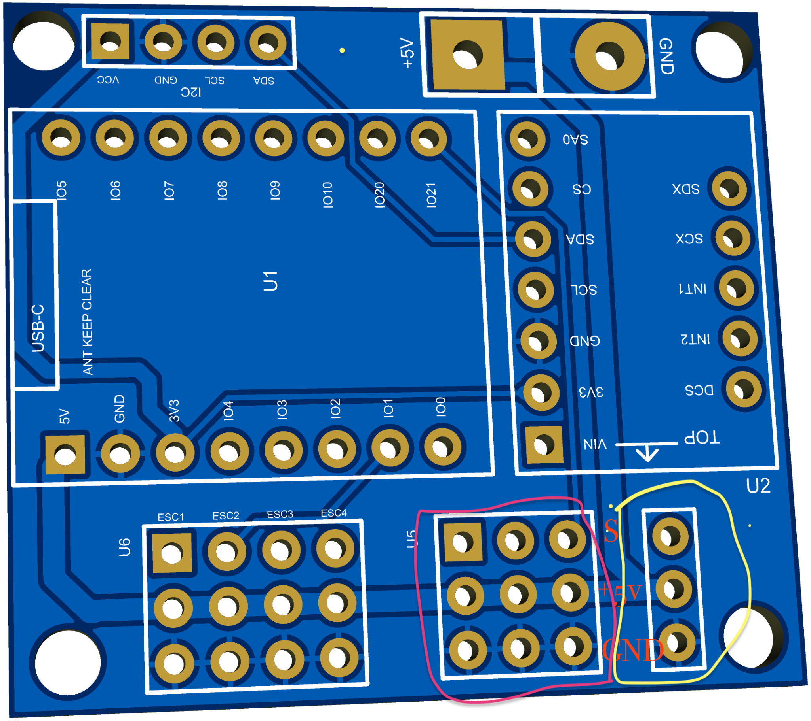

Too low: weak / slow response. Too high: aggressive correction and oscillation.
ZEBJUSBuild it for realwww.zebjus.com ↗
VIRTUAL BENCHNo real hardware energised
CURRENT STEP
Start assembly
BUILD CHECK
Completion
AXIS MAP← / → = ROLL only↑ / ↓ = PITCH onlyA / D = YAW rate
Manual disturbance lesson: Rate Hold captures the Roll/Pitch attitude when the stick is released and returns to that captured attitude after wind/manual disturbance. Angle Mode returns to the calibrated level when Roll/Pitch stick is released. Yaw remains rate-only.
STUDENT LESSON
Learn what P, I and D actually do
Too low: CG/wind bias remains. Too high: slow wobble, overshoot and wind-up.
Too low: bounce / overshoot. Too high: harsh/noisy motor corrections.
Target 0.00Actual 0.00Error 0.00Loop RATE
Run the simulator, apply a preset or change P/I/D, then manually disturb the drone. The coach explains the response.
RATE HOLDWhile the Roll/Pitch stick is moved it commands angular rate. When released, this trainer captures the current Roll/Pitch attitude and uses a fixed attitude-capture helper feeding the Rate PID to maintain that angle against disturbance.
ANGLE MODERoll/Pitch stick commands angle around the calibrated level. When released, target returns to the calibrated level. Wind or manual tilt is corrected back to that level by Angle PID → Rate PID.
YAWYaw is Rate PID in both modes. There is no Yaw Angle PID or heading lock.
COURSE NOTEPure acro/rate mode normally holds angular rate only. This simulator’s Rate Hold intentionally adds stick-release attitude capture so students can study disturbance rejection using the Rate PID around a held attitude.
Practical tuning exercise
- Set I and D low. Increase P until response is quick but begins to oscillate, then reduce slightly.
- Increase D until overshoot / bounce is damped without noisy motor activity.
- Add I until persistent error from CG or wind disappears.
- After the Rate loop is stable, tune Roll/Pitch Angle P for the desired leveling speed.
- Yaw is tuned only in the Rate loop.
PID RESPONSETarget Roll Pitch Yaw rate
10-CHANNEL CONTROL LAB
Virtual Transmitter
Mouse, touch or keyboard control with visual safety interlocks.
LOCAL
POWEROFF
LINKSIM
ARMSAFE
MODEANGLE
ALTOFF
SIMULATORSafe local practice. No kit command is sent.
REAL KITSingle-controller lock • supervised prop-off bench only.
TRANSMITTER OFFTurn the transmitter on to enable controls.
LEFT • THROTTLE / YAW
T 1000 • Y 0W/S throttle • A/D yaw
ZEBJUS TX10Transmitter is OFF. Outputs are held safe.SIMULATOR
RIGHT • PITCH / ROLL
P 0 • R 0Arrow keys • pitch / roll
KEYBOARD↑ ↓ ← → Pitch / RollW S ThrottleA D YawT TX On/OffM ModeX Disarm + throttle low
SAME-WI-FI • AUTOMATIC DISCOVERY
Not connectedConnect Your ZEBJUS Kit
No IP address knowledge is required. The browser scans the default names zebjus_drone_1, zebjus_drone_2…, fills the detected Kit Name automatically, verifies the permanent Device ID, then remembers the verified kit for fast reconnect.
1Same Wi-FiConnect this computer and the drone kit to the same Wi-Fi network.
2Auto DiscoverDefault kit names are scanned automatically in the background.
3Verified ConnectThe permanent Device ID is checked before the address is trusted.
Automatic connection orderCached IP → Device ID verification →
kit-name.local → Device ID verification.Connection activity
Background discovery ready.
CONNECTED KIT DETAILS
OfflineNo kit selected
LOCAL LINKREADY
KITNOT SELECTED
CONTROL--
NETWORK--
Device ID--
AccessOpen
Mode--
Wi-Fi--
RSSI--
Firmware--
IP--
Control--
Select a kit.
AP / Setup --STA / Webapp --
AUTOMATIC DISCOVERY • SAME WI-FI
0 kitsAvailable Kits
Scanning zebjus_drone_1, zebjus_drone_2… on this Wi-Fi…
KIT IDENTITY
Change unique kit name
NETWORK
Change Wi-Fi network
Saved Wi-Fi profiles on this kit
SSID + password are stored separately inside this ESP32 kit. Passwords are never shown back to the browser.
STEP-BY-STEP
Calibration wizard
LIVE
Sensor status
GYRO X0.000
GYRO Y0.000
GYRO Z0.000
LEVELWaiting
↑Match the ZEBJUS FC FRONT arrow to the red-arm front.
ATTITUDE
Live telemetry
ROLL0.00°
PITCH0.00°
YAW0.00°
BATTERY-- V
RAW
Telemetry stream
KEYBOARD
Simulator key mapping
Click a key field, then press the key you want. Save settings to keep the mapping on this browser.
FC CASE / EXPANSION
Accessible case headers
FC MOUNTDouble-side foam tape directly on the top plate • NO spacer / standoff.
ESC1–ESC4Upward 2.54 mm male header pins. Source row • +5V centre row • GND bottom row. ESC female plug comes down from above.
External GPIO ×3Source / +5V / GND. Use for servo, LED, LED matrix, GPS/control or sensors as appropriate.
RX / PPM headerOptional. PPM signal / +5V / GND. When RX is not used, the source pin can be used as another compatible I/O.
I²C 4-pinVCC • GND • SCL • SDA remains user accessible.

PROJECT TOOLS
Export / report / fullscreen
AUDIO
ONComfortable sound effects
Component pick/drop sounds are stronger. Battery power-up uses a realistic synthetic ESC startup sequence without continuous assembly motor noise. PID simulator and 2D BLDC motor sound remain speed-dependent.
PERFORMANCE / STARTUP
Runtime diagnostics
Collecting diagnostics…